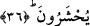

temizlik olmadan her Müslüman, kalb mescidinin işini üstlenemez. Oranın velâyetine
boş meşgûliyetlerden arınan, lüzumsuz bağlılıkları bırakan ve ayıplarından temiz
kimseler lâyıktır. Allah Teâlâ, yüce tecellîlerin, zevklerin ve birbirini takip eden
mânevî hallerin cennetine soktuktan sonra dostlarına azab etmez. Çünkü onlar odunla
tutuşturulan ateşe lâyık olan varlıktan kurtulmuşlardır. Onlarda hakkânî kalb evini
aydınlatan ilâhî nurdan başka bir şey kalmamıştır. Allah, ancak adâletinin gereği olarak
rahmete lâyık olmayanlara veya sâlih amelle kötü ameli birbirine karıştıranları bu
pislikten temizlemek için azâb eder.
Nebî (a.s.)’a uymak ve getirdiği hükümleri kabul etmek, kurtuluşa götürür ve tasfiyeye
sebep olur. Şu halde sana düşen iyi işleri seçmek ve kötülüklerden uzak durmaktır.
Çünkü bunlar iki mühim farzdır. Takvânın hakikati, bu iki şeyi yapmaktan ibarettir.
Hasta ancak zararlı şeylerden korunmak suretiyle sıhhat bulur. Aklı başında olan kul
için hasta kalbleri tedavi etmek her şeyden mühimdir. Bu ise takvâ ile yaratılmışların en
hayırlısının sünnetini ihyâ etmekle olur.
Bir hadiste şöyle buyurulmuştur:
“Sünnetimi dirilten beni diriltmiş, beni dirilten de beni sevmiş olur. Kim beni
severse kıyamet günü cennette benimle beraberdir.”[26]
Başka bir hadiste de:
“Kim sünnetimi muhâfaza ederse Allah ona şu dört hususiyeti ikram eder: İyilerin
kalbinde muhabbet, kötülerin kalbinde heybet, rızıkta genişlik ve dinde kavîliktir.”
buyurulmuştur.
Rasûlullah (s.a.v.)’in sohbetinde bulunma fırsatı elden gittiyse de onun sünnetiyle ve
onun sünnetini sevenlerle sohbet mümkündür. Bu, kıyâmete kadar devam edecektir.
Büyüklerin sohbetinde bulunmanın ve müttakî kimselere yakın olmanın tesiri büyüktür.
Hakk’ın ve Rasûlü’nün kelâmını dinlemenin faydası tamdır. Fakat esas olan Allah’ın
tevfîk ve hidâyetidir.
Allah Teâlâ’dan niyetlerimizi düzeltmesini, salih amellerimizi çoğaltmasını, kitap ve
sünnetin nûruyla teyid edip cennette yüce makamlarla şereflendirmesini niyaz ederiz.
36. Şüphesiz inkâr edenler mallarını, Allah yolundan alıkoymak için harcıyorlar.
Daha da harcayacaklar. Ama sonunda bu, onlara yürek acısı olacak ve en sonunda
mağlup olacaklardır. Kâfirler ise cehennemde toplanacaklardır.
Bu âyet Bedir günü müşriklere yemek yedirenler hakkında inmiştir. Bunlar Kureyş